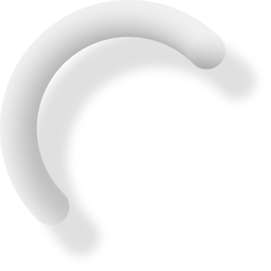
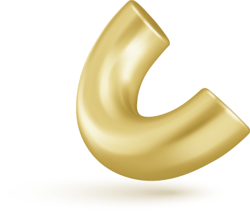
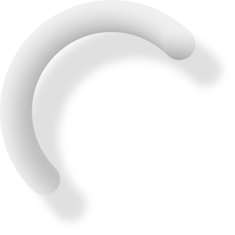
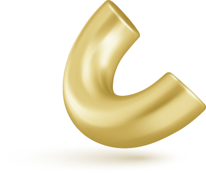

Ao produzir uma imagem renderizada para apresentar ao seu cliente, o designer deve cuidar para encantar e “vender” a ideia imaginada. Para isso, o designer deve tomar cuidado com decisões de enquadramento, iluminação, textura e formatos de imagem. Independente do software utilizado, essas decisões e alterações de parâmetros ajudarão na produção de imagens de maior qualidade.
Em seguida, serão apresentadas algumas configurações e dicas que ajudarão nessa produção de renders. Nos cards a seguir, veja os exemplos apresentados!
Clique ou toque para visualizar o conteúdo.
Quando se está com tudo pronto (iluminação, material e câmeras), é preciso cuidar como as imagens serão salvas. Em primeiro lugar, é necessário ter cuidado com a resolução da imagem que você quer. Renders com resolução muito baixa acabam não mostrando detalhes do projeto, enquanto renders com resolução muito alta demoram muito tempo para ficarem prontos.
Se você está trabalhando com imagens que ficarão apenas no mundo virtual e que não precisam de muitos detalhes de zoom, não são necessários formatos muito grandes. São os casos de imagens para postar em redes sociais e mandar virtualmente para clientes. Caso você precise imprimir (seja em folhas A3 ou em outdoor, por exemplo), terá de ter um pouco de cuidado com o tamanho da imagem.
Alguns programas de renderização (como o V-Ray) também trabalham o que chamam de elements: são imagens que mostram os componentes mais básicos que formam o seu render. É possível escolher quais produzir, ao mesmo tempo que está sendo renderizado o seu projeto. Com essas imagens, você pode trabalhar em um software como o GIMP e o Photoshop para destacar reflexos, retirar fundo, mudar a cor e assim por diante, sem precisar renderizar novamente.
![Seis imagens renders mostrando os render elements de uma renderização no V-Ray. Com eles, é possível fazer diversas alterações na pós-produção. Na primeira imagem, o render normal. Na segunda imagem, o render element chamado BumpNormals, usado para destacar texturas e relevo. Na terceira imagem, o render element chamado Extra Texture, usado para destacar sombras de contato. Na quarta imagem, o render element chamado Material ID Color, usado para seleção específica de um ou outro elemento. Na quinta imagem, o render element chamado Reflection, usado para trazer reflexos mais fortes. Na sexta imagem, o render element chamado Alpha, usado para fazer alterações na imagem de fundo.](img/01/assets/dsktp/fig_02.svg)
Finalmente, ao salvar a imagem, é possível escolher entre alguns formatos. Os mais comuns são JPG e PNG, mas as possiblidades que os programas de renderização oferecem são as mais diversas. É interessante começar trabalhando com as mais comuns e, aos poucos, descobrir o que cada formato oferece.
Com essas dicas finais, os seus renders estarão prontos para serem utilizados. Se você quiser, ainda, trabalhar as imagens na pós-produção, deve ter a imagem “crua” do renderizador bem trabalhada. Softwares como o GIMP e o Photoshop conseguem destacar, mudar e evoluir bastante a imagem, mas eles têm um limite do que conseguem fazer. Com as dicas apresentadas, você terá condições de produzir uma boa imagem para seguir trabalhando ou para apresentar ao seu cliente.